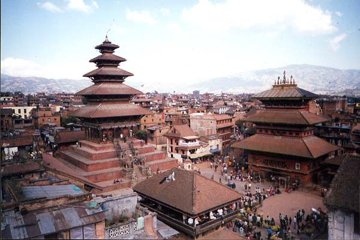

|
|
Bhaktapur

Bhaktapur is lying at 12 KM east of capital city Kathmandu. Bhaktapur in Sanskrit language means 'The Town of Devotees",
the city is also known as Khwopa or Bhadgaon or as an ancient Newari town.
It is locally known as "Khwopa and Bhadgaon" which is world renowned for its elegant art,
fabulous culture , colourful festivals, traditional dances and indigenouslifestyle of different
people of different religion. For its majestic monuments, temples and the native typical newar
lifestyle best known for their long history of craftsmanship, the ancient city is also variously
known as the " City of Culture ", "Living Heritage " , "Nepal's Cultural Gem " and "An open museum".
Given such unequaled opulence in ancient art and culture, Bhaktapur is more like an open museum, and
the ambiance here is such that it instantly transports visitors back by centuries. This conch shaped
hostoric city is spreading over an area of 6.88 square KM at 1,401 meters above sea level,
which was founded in the 12th century by King Anand Dev Malla.Bhaktapur was the capital city of
the Greater Malla Kingdom till the 15th century AD. The many of Bhaktapur's greatest monuments were
built by thethen Malla rulers.
The ancient ritual dances and festivals are still observed by the locals with the same fervour
and ehthusiasm as their ancestors did centuries ago. King Yaksha Malla (15th ventury) heavily fortified
this city. Bhaktapur has its gem in Durbar Square and Changu Narayan temple-- a World Heritage site listed
by the UNESCO. Strewn with unique palaces, temples and monasteries best admired for their exquisite artworks
in wood, metal and stone, the palatial enclave has bewitched pilgrims and travelers for centuries.Yet, they
are not all though. Stretching all along the township, the panoramic Himalaya levitates in the skyline as
if to keep vigilance on the city'senviable beauty and splendor.It grows from a collection of villages
strung along the old trade route between India and Tibet.
Location:
Geographical Location: Located 27 036' to 270 44' Northern Latitude and 85021'to 85032' Eastern Longitude
Area: 138.46 Square Kilometers (the smallest District of the country)
Boundary: East: Kavre, West: Kathmandu and Lalitpur, North: Kathmandu and Kavre Palanchok, South: Lalitpur District.
Geo-Physical Area : Hilly and Valley Land
Land-use:
| Types of land |
Area (in square Km) |
Area in % |
| Arable land |
96.57 |
80.1 |
| Jungle and Forest |
12.46 |
10.32 |
| Bushes |
6.82 |
5.65 |
| Urbanarea & Settlement |
2.67 |
2.21 |
| Pasture Land |
0.21 |
0.18 |
| Rocky, Sandy |
1.97 |
1.63 |
|
|

{kind=link}